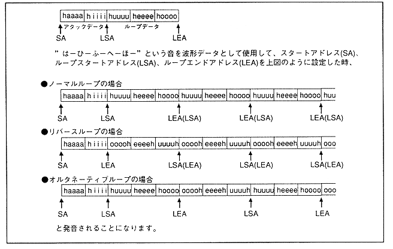

Set the loop format.
Table 4.14 Loop types
| LPCTL | Loop format |
| 0 | Loop OFF |
| 1 | Normal loop |
| 2 | Reverse loop |
| 3 | Alternative loop |
∙ Loop processing or sound memory access will be terminated under one of the two conditions shown below.
- When the attenuation reaches its maximum after release.
- When the point to read reaches the loop end point when the loop is OFF.
When using the normal loop and reverse loop, the data corresponding to “SA + LSA” (loop start address) in the waveform data and the data corresponding to “SA + LEA” (loop end address) are the same value. Set to. By using the same method for the alternative loop, the pitch of the normal loop and reverse loop can be matched.
Figure 4.10 shows a specific example of the loop type.
Figure 4.10 Loop types
